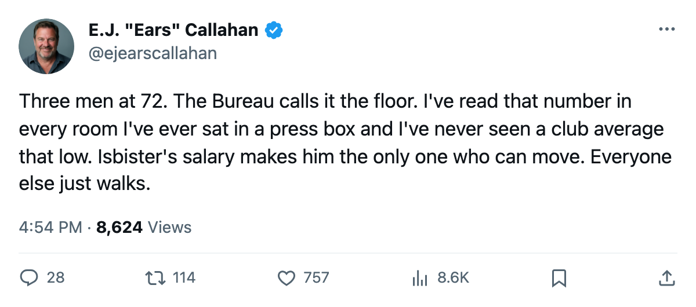
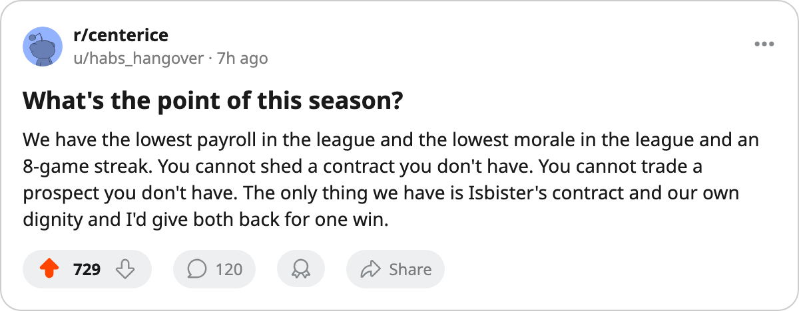

The Morale Floor: EDM Holds 3 of the League's 5 Lowest Men, and Every One Leaves in July
87.1 club average, L8, the lowest payroll in the league, and three men at 72 morale on expiring deals. The room knows what it is.
 E.J. "Ears" CallahanInsider · The Hot Stove
E.J. "Ears" CallahanInsider · The Hot Stove

EDM moves Isbister before the deadline
 Edmonton Oilers carries the league's lowest club morale average at 87.1. Three of the five lowest individual morale ratings in the league wear an Edmonton sweater:
Edmonton Oilers carries the league's lowest club morale average at 87.1. Three of the five lowest individual morale ratings in the league wear an Edmonton sweater:  Shawn Horcoff69 at 72,
Shawn Horcoff69 at 72,  Brad May75 at 72, and
Brad May75 at 72, and  Brad Isbister79 at 72. All three are on contracts that expire this July.
Brad Isbister79 at 72. All three are on contracts that expire this July.
The Oilers are 35 points in 41 games, on an 8-game slide, with $42.95M in payroll (the league's lowest) and $1.23M per point. Four men are on the injured list.
Three at the floor, three exits
| Player | Pos | Morale | Overall | Salary | Yrs Left | GP | MPG |
|---|---|---|---|---|---|---|---|
| Shawn Horcoff | C | 72 | 69 | $0.60M | 0 | — | — |
| Brad May | LW | 72 | 75 | $1.10M | 0 | 32 | 10.0 |
| Brad Isbister | LW | 72 | 79 | $3.13M | 1 | 41 | 9.9 |
Isbister is the one who could move before the trade deadline, 70 days out. At $3.13M with a 79 overall and 9.9 minutes a night in 41 games, he is a bottom-six winger carrying a mid-range salary. A contender that needs depth and can eat $3.13M for a month of a 79-overall left wing will call. The Bureau's Morale Scale puts him at 72, tied for the league floor, on a deal that runs out in July.
Brad May fits the same shape: 75 overall, $1.10M, 32 games at 10.0 minutes. Less salary risk, less trade value.
Shawn Horcoff at 69 overall and $0.60M has no trade value and will not be back.
No lever to pull
The Oilers hold 5 picks, 1 first-rounder. Payroll is already the league floor, so there is nothing big to shed. The roster is too thin to send anyone out. The tank belongs to  San Jose Sharks (32 points, L12), and EDM sits behind every other club's draft capital with only 5 total picks.
San Jose Sharks (32 points, L12), and EDM sits behind every other club's draft capital with only 5 total picks.
Four men on IR, three at the morale floor, an 8-game slide, the cheapest roster in a 30-team league. The next-lowest club average is  Carolina Hurricanes at 87.9. The highest is
Carolina Hurricanes at 87.9. The highest is  Colorado Avalanche at 98.9. EDM sits 11.8 points below the league's best room.
Colorado Avalanche at 98.9. EDM sits 11.8 points below the league's best room.
League sources believe a call is coming for Isbister in February. The price will be a 4th-rounder and a healthy scratch.

